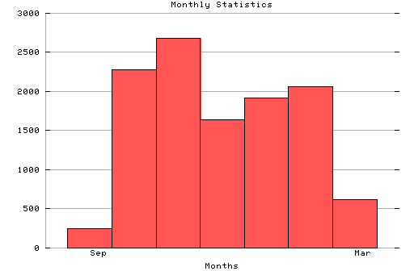

HTTP Server Monthly Statistics
Covers: 09/27/95 to 03/11/96 (167 days).
All dates are in local time.
Sep (09/27/95): 248 : Oct (10/01/95): 2275 : ## Nov (11/01/95): 2677 : ### Dec (12/01/95): 1641 : ## Jan (01/01/96): 1916 : ## Feb (02/01/96): 2061 : ## Mar (03/01/96): 614 : #

Statistics generated at Mon Mar 11 03:08:36 MET 1996, (C) Schibsted Nett AS, 1995.